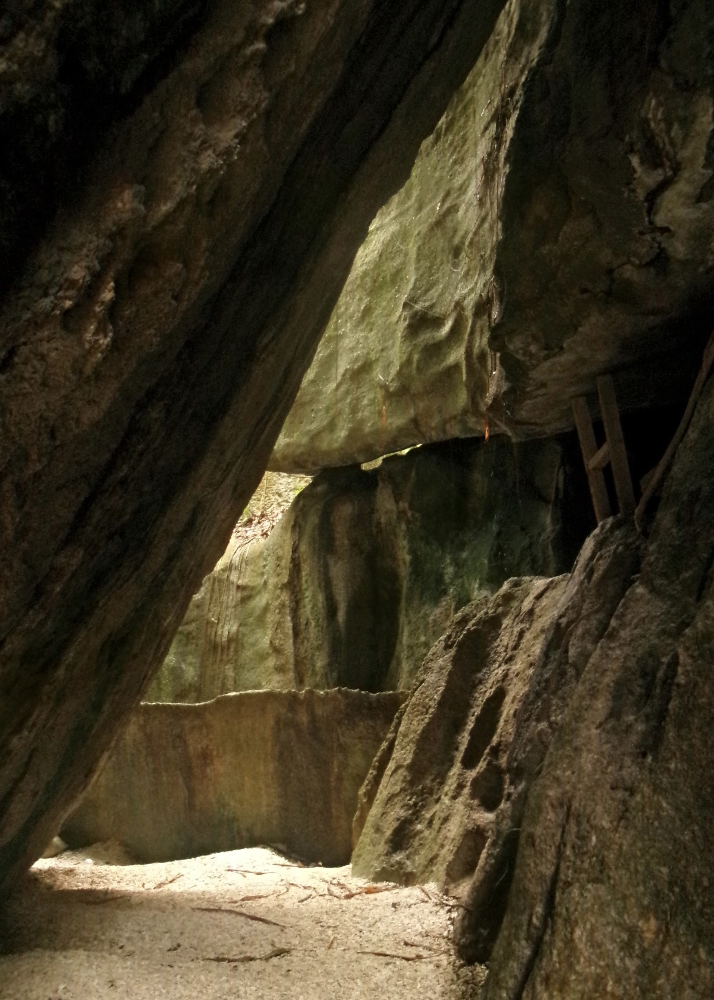
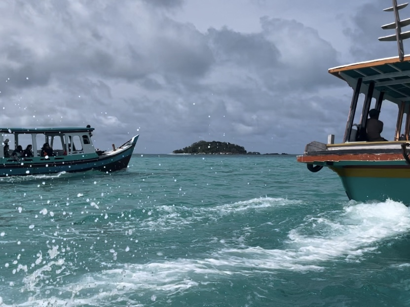
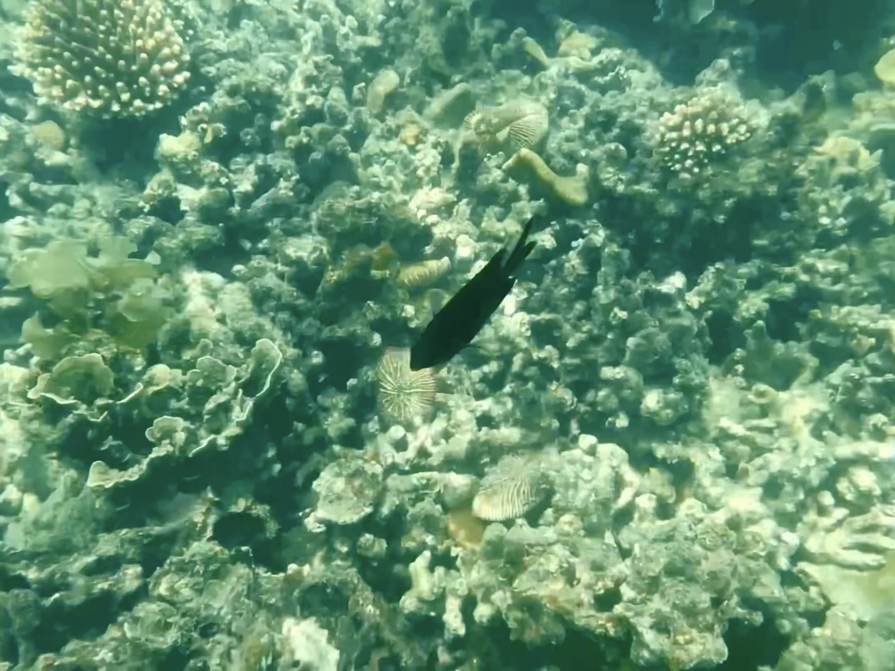
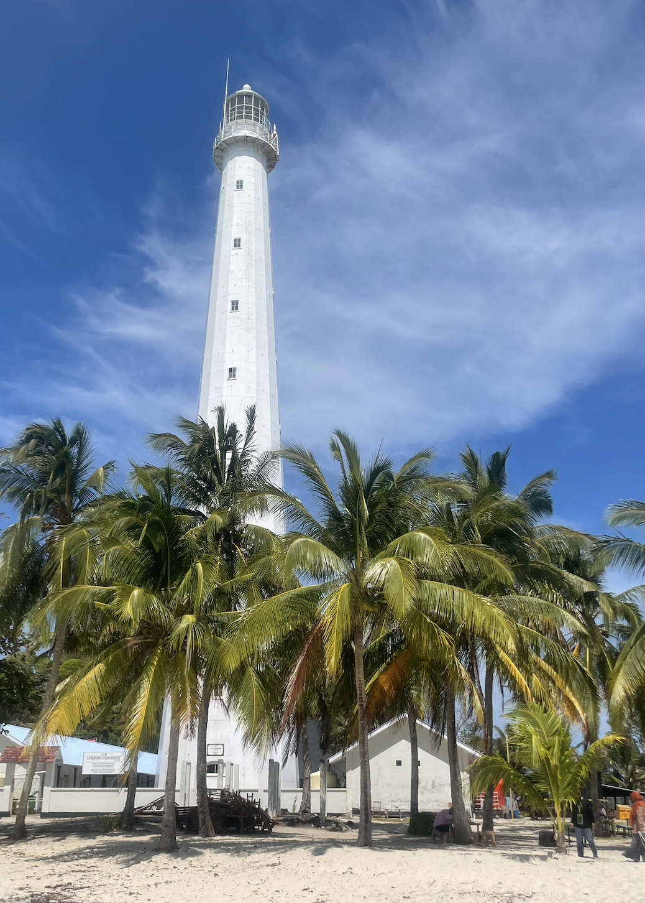

Hari selanjutnya menjadi salah satu hari paling seru selama edutrip karena kami melakukan kegiatan island hopping yang sudah sangat dinantikan sejak awal perjalanan. Sejak pagi, kami sudah bersiap dengan penuh semangat karena tahu hari ini akan diisi dengan banyak aktivitas menyenangkan di laut. Kami mengunjungi beberapa pulau seperti Pulau Lengkuas, Pulau Kepayang, dan Pulau Kelayang yang masing-masing memiliki keindahan alam yang berbeda dan unik. Air laut yang sangat jernih dengan gradasi warna biru yang indah serta pasir putih yang bersih membuat suasana terasa sangat menyenangkan dan menenangkan. Kami juga melakukan aktivitas snorkeling, melihat keindahan bawah laut yang penuh dengan ikan berwarna-warni dan terumbu karang yang masih terjaga dengan baik. Beberapa dari kami bahkan mencoba lebih lama di air karena terlalu menikmati suasananya. Pengalaman ini menjadi salah satu momen yang paling berkesan karena memberikan pengalaman baru yang jarang bisa dirasakan dalam kehidupan sehari-hari.






Selain itu, kami juga mengunjungi Goa Kelayang yang memiliki keunikan tersendiri dan memberikan pengalaman berbeda dari tempat sebelumnya. Kami bisa menjelajahi area sekitar goa sambil menikmati pemandangan alam yang masih alami dan belum terlalu ramai. Seluruh rangkaian kegiatan hari itu terasa sangat seru dan penuh kesan, bahkan waktu terasa berjalan begitu cepat karena kami terlalu menikmati setiap momennya bersama teman-teman. Kebersamaan yang tercipta membuat pengalaman ini menjadi lebih berarti dan sulit untuk dilupakan. Sebelum kembali, kami juga menyempatkan diri untuk membeli oleh-oleh sebagai kenang-kenangan dari perjalanan ini, baik untuk diri sendiri maupun keluarga di rumah. Hari tersebut benar-benar menjadi puncak keseruan dari seluruh rangkaian edutrip yang telah kami jalani bersama dengan penuh kebahagiaan dan cerita menarik.